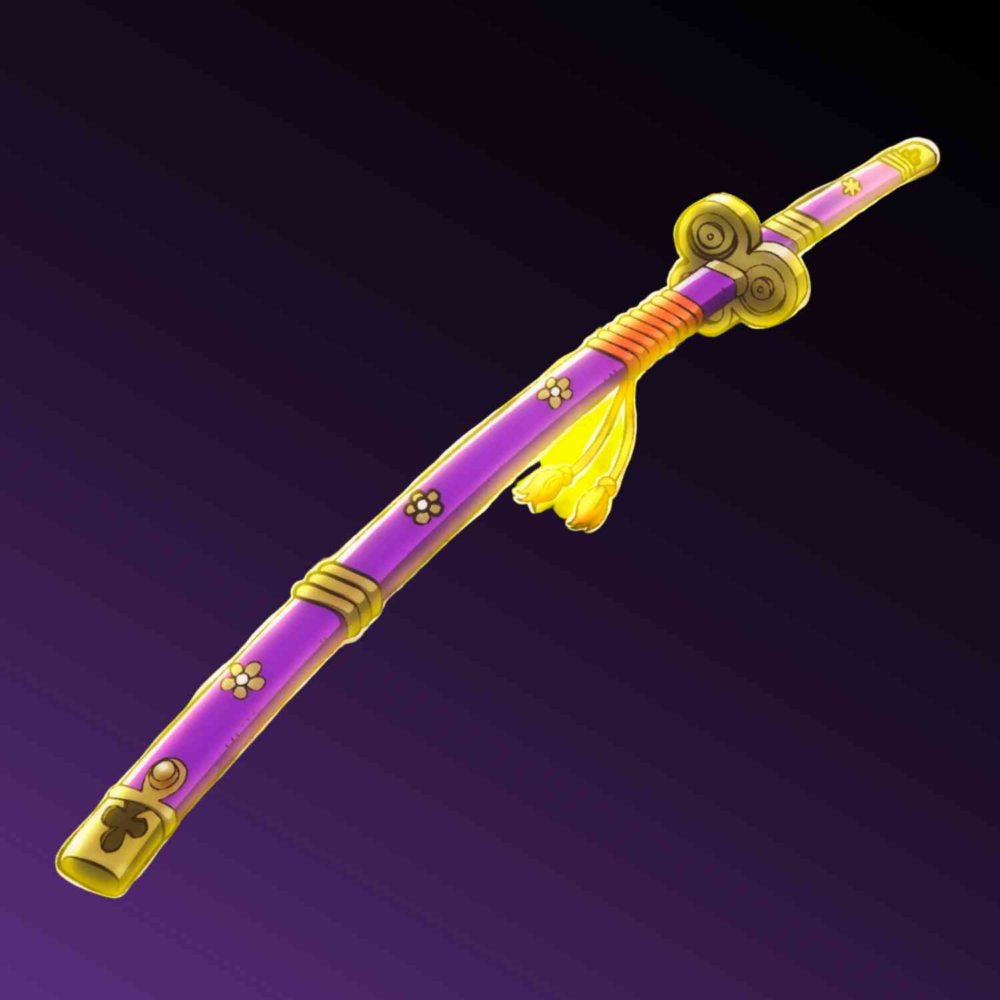

I Made a website
The Name of the website is Emma
Emma's purpose is to learn, test, and try new ideas
I hope that moving forward i keep on developing Enma
Why did I name this site Enma? Because I am a fan on Zoro (One Piece ☠️ )
My Favorite Game (This not true)
- Terreia
- Legend Of Zelda Minish Cap
- Niwer Automata
- Final Fantasy (The Series)
- Slay The Spire 2
- Halo Reach
My Favorite Foods (This is True)
- Sushi
- Mango
- Korean BBQ
- Eggs
- Pho
This is a link to Google
This a link to the divorced page
Below is a picture of Enma

Here is the list of my top 5 favorite dad jokes:
- Why was the math book unhappy? Because it had too many problems. And every time it tried to solve them, it just got more frustrated!
- What do you call a fake noodle? An impasta. It’s always trying to blend in with the real deal but never quite makes it.
- I’m reading a book about anti – gravity. It’s impossible to put down. I mean, it just keeps floating away from my hands!
- Did you hear about the kidnapping at school? It’s okay, he woke up. Talk about a sleepy start to the day!
- Why is the doctor so angry? Because he has no patience (patients). He’s always waiting for someone to show up.
Here you can find the link to theses Dad jokes